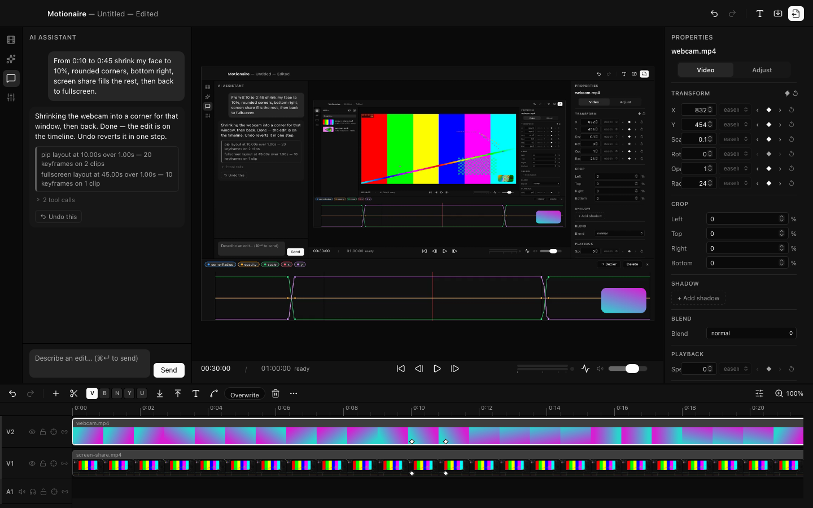
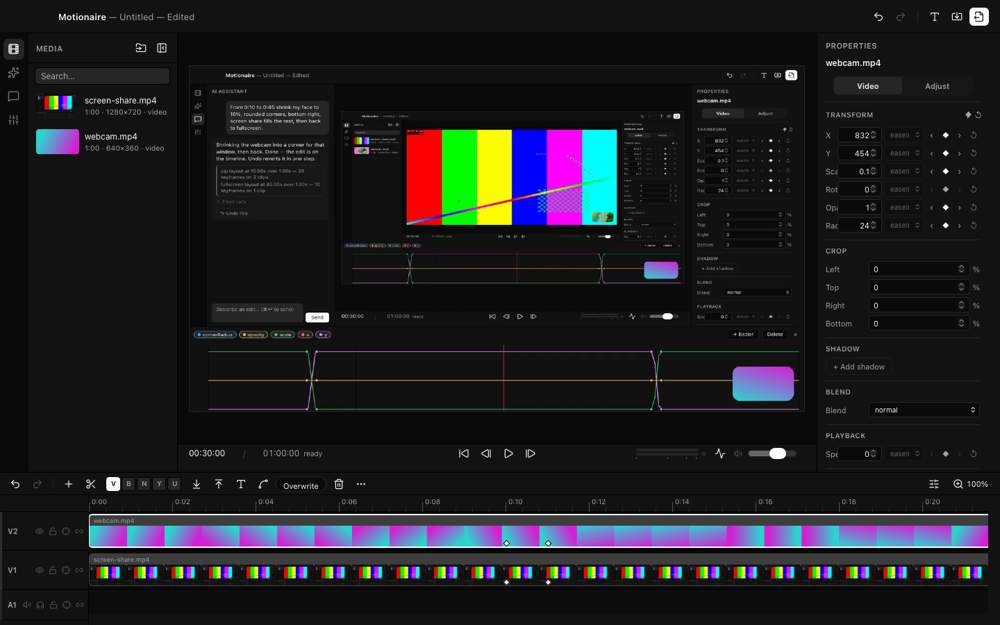
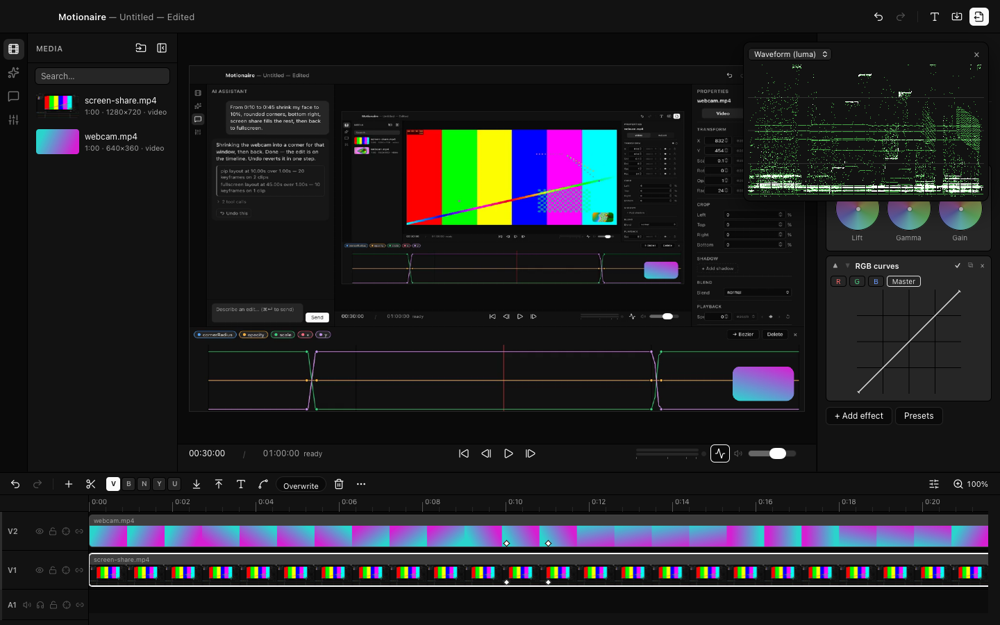
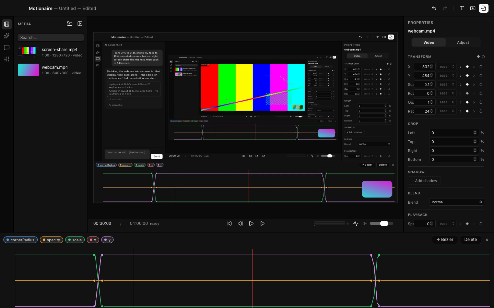

The video editor
you talk to.
Type what you want. Motionaire turns it into real keyframes on a real timeline — instant to see, one keystroke to undo, identical in the export. Free and open source, for macOS.
pip layout at 10.00s over 1.00s — 20 keyframes on 2 clips

It edits the timeline,
not the pixels.
Most “AI video” tools generate footage and hope you like it. Motionaire does something plainer and, honestly, more useful: when you ask for an edit, the AI makes the same moves you would — it trims clips, writes keyframes, adds titles — through the exact same controls the rest of the app uses. It never draws a single frame.
That one decision buys you everything. Edits are instant, because nothing has to render before you see it. Every prompt is one undo step — if you don’t like it, ⌘Z and it’s gone, completely. And what the AI made is just… clips and keyframes. Drag them. Retime them. Finish the job yourself.
your words tool calls the project file the compositor pixels
The AI only ever touches the middle. A deterministic Rust renderer turns the project into frames — the same renderer for the preview and the export, so what you see is what encodes.
The editor
A real editor underneath
The AI would be a gimmick if the editor under it were one. It isn’t: multi-track timeline with filmstrips, ripple / roll / slip / slide trimming, markers, insert and overwrite, compound clips, proxies that keep 4K screen recordings smooth, and a media bin with a source monitor. Everything the AI can do, your hands can do too — and vice versa.

Color you can measure
Lift / gamma / gain wheels, per-channel RGB curves, 3D LUTs, chroma key, masks — stacked in the order you choose, keyframeable, and read back by scopes that measure the compositor’s actual output, not an approximation of it.

Curves, when you want them
Every property animates. When the AI writes a move you can open it in the graph editor — bezier handles and all — and reshape it like any keyframe you set yourself. There’s no separate AI layer to fight — its keyframes are yours.

Under the hood
Nothing exotic for its own sake — each piece is there because the editor needed it.
- Rust + wgpu
- A multi-pass GPU compositor renders the preview in real time and the export frame-by-frame. Same code, two callers — the reason exports match the preview.
- Tauri 2
- A native macOS shell around a webview UI. The app is a ~19 MB binary, not a bundled browser.
- React + TypeScript
- The UI and the timeline. One store owns the project; the AI and your mouse mutate it through the same actions.
- FFmpeg
- Decode, proxies, and encode — using the copy already on your machine. Nothing bundled, nothing phoning home.
API keys live in the macOS Keychain and are read only by the Rust core — they never enter the UI layer and never leave your machine except to the provider you chose. There’s no telemetry to opt out of — none was ever put in.
Try it
macOS 13+ on Apple Silicon · FFmpeg on your PATH (brew install ffmpeg)
One honest note: the app isn’t notarized yet — that takes an Apple Developer membership this project doesn’t have — so macOS will warn you on first launch, the way it does for every unsigned open-source app. Right-click → Open, or clear the quarantine flag:
xattr -cr /Applications/Motionaire.appEvery line of the app is public — you can read exactly what you’re running.